Skip to content

SignalFlow
Auto-free and memory management
Initializing search
ideoforms/signalflow
Getting started
Elements
Troubleshooting
Reference library
SignalFlow
ideoforms/signalflow
Getting started
Getting started
Installation
Installation
Easy installation
Command-line installation
Examples
License
Elements
Elements
The AudioGraph
The AudioGraph
Creating the graph
Configuration
Status and properties
Recording the audio output
Stopping the graph
Nodes
Nodes
Playback
Inputs
Operators
Multichannel
Status and properties
Stochastic nodes
Developing a new Node class
Patches
Patches
Defining a Patch
Playback
Inputs
Operators
Properties
Exporting and importing
Auto-free and memory management
Auto-free and memory management
Table of contents
Auto-free and memory management
Buffers
Buffers
Creating and loading
Saving and exporting
Passing to a node or patch
Accessing a buffer's contents
Operators
Properties
Troubleshooting
Troubleshooting
Installation problems
Exceptions
Exceptions
InsufficientBufferSizeException
DeviceNotFoundException
NodeNotPlayingException
NodeAlreadyPlayingException
Reference library
Reference library
Analysis
Buffer
Control
Envelope
FFT
Operators
Oscillators
Processors
Processors: Delays
Processors: Distortion
Processors: Dynamics
Processors: Filters
Processors: Panning
Sequencing
Stochastic
Table of contents
Auto-free and memory management
Patch
Auto-free and memory management
Auto-free.
Back to top